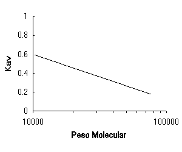

Filtración por gel
Un amplio rango de moléculas biológicas pueden ser separadas en base a diferencias en tamaño y forma, estas características afectan su habilidad de penetrar matrices porosas. El procedimiento de separación se conoce como cromatografía de filtrado por gel o cromatografía de exclusión por gel. Se puede emplear una variedad de matrices porosas, dependiendo de la naturaleza de las moléculas a separar. Para propósitos de separación de proteínas, la matriz consiste en una columna rellena con esferas porosas de un gel inerte, altamente hidratado, por lo que el proceso es referido a menudo como filtración por gel.
Las matrices comerciales más comunes son: Sephadex (esferas de dextrano), Sepharosa ,y Bio-gel-A (agarosa) ,o Bio-gel P (poliacrilamida), aunque otros materiales como poliacriloilmorfolina y varios poliestirenos también han sido utilizados. El dextrano, la agarosa y poliacrilamida, pueden ser fabricados con diferentes grados de porosidad, por lo que sus rangos de separación serán diferentes. Las columnas de dextrano Sephadex y de poliacrilamida Bio-gel permiten el fraccionamiento de proteínas de hasta peso molecular 800.000 , por otro lado, utilizando columnas de esferas de agarosa se pueden separar proteínas y complejos macromoleculares de peso molecular en el rango de millones. Recientemente, geles de dextrano entrelazado (Sephacryl) han sido promocionados como matrices excepcionalmente rígidas y estables que pueden fraccionar moléculas con peso molecular hasta 8 millones. La rigidez y estabilidad de las columnas de poliacrilamida puede ser mejorada incluyendo agarosa en la matriz. Las columnas de tipo poliacrilamida/agarosa están disponibles comercialmente (Ultrogel). Continuamente se están desarrollando nuevos tipos de geles. La siguiente tabla resume las propiedades de las matrices utilizadas en este programa.
|
|
|
Rango aproximado de separación para proteínas globulares (Peso molecular) |
|
Sephadex G-50¹ |
Dextrano |
1.500 – 30.000 |
|
Sephadex G-100¹ |
Dextrano |
4.000 – 150.000 |
|
Sephacryl S-200 HR¹ |
dextrano/acrilamida |
5.000 – 250.000 |
|
Ultrogel AcA 54² |
poliacrilamida/agarosa |
6.000 – 70.000 |
|
Ultrogel AcA 44² |
poliacrilamida/agarosa |
12.000 – 130.000 |
|
Ultrogel AcA 34² |
poliacrilamida/agarosa |
20.000 – 400.000 |
|
Bio-Gel P-60³ |
Poliacrilamida |
3.000 – 60.000 |
|
Bio Gel P-150³ |
Poliacrilamida |
15.000 – 150.000 |
|
Bio-Gel P-300³ |
Poliacrilamida |
60.000 – 400.000 |
¹ Sephadex® y Sephacryl® son marcas registradas de GE Healthcare
Bio-Sciences AB.
² Ultrogel® es marca registrada de BF
Biotechnics, Inc.
³ Bio Gel® es marca registrada de Bio-Rad
Laboratories, Inc.
El fraccionamiento de una muestra de proteínas utilizando filtración por gel, se efectúa como sigue: La resina, presente como una suspensión en el buffer escogido, es empaquetada en una columna cromatográfica de vidrio y dejada empaquetar por gravedad. Luego de lavar y equilibrar la columna con buffer, se aplica la mezcla de proteínas en la parte superior de la columna y el eluído es colectado en la parte inferior de la columna en una serie de fracciones. Las proteínas atraviesan la columna interaccionando, o no con la fase estacionaria, por lo que adquieren diferente velocidad. Las proteínas que exceden el máximo tamaño de poro no pueden entrar a las esferas de gel, estas proteínas eluirán primero en el llamado” volumen de exclusión”o “volumen vacío” Todas las proteínas con tamaño menor que el tamaño de los poros se equilibrarán con el buffer dentro y fuera de las esferas de gel y pasaran una porción de su tiempo interactuando con las partículas de gel, estas proteínas eluirán más tarde.
La elección cuidadosa del tipo de gel es importante para el fraccionamiento de mezclas complejas de proteínas. El uso de una matriz con tamaño de poro inadecuado puede resultar en que la proteína de interés sea excluida de la matriz y eluya con muchas otras proteínas, en el volumen vacio o en el caso contrario, puede equilibrar con el volumen completo de la columna y eluir con muchas otras proteínas en la fracción salina, cerca del volumen de la columna. En ambas situaciones la resolución del fraccionamiento es pobre. Idealmente el tamaño de poro del gel debe ser uno al cual la proteína de interés es parcialmente excluida desde la matriz, una condición que lleva al mayor grado de fraccionamiento desde otras proteínas. Para proteínas parcialmente excluidas, un gráfico logarítmico del (peso molecular de proteínas versus Kav, lleva a una relación lineal, donde
Kav |
= |
volumen elución -
volumen vacío |
Relación lineal entre Kav y log(peso molecular)

Entonces, una columna puede ser calibrada con proteínas estándar de peso molecular conocido, su volumen de elución registrado y estos datos pueden ser utilizados para dibujar un gráfico. Posteriormente la misma columna puede ser utilizada con una muestra problema y los pesos moleculares de las muestras pueden ser interpolados desde la curva de referencia. De todas maneras se debe tener en cuenta que la forma de la proteína tiene un efecto en la filtración por gel, polipéptidos fibrilares largos tienen la tendencia a comportarse como si fueran proteínas globulares de mayor tamaño.
Cuando se intente una separación por filtración por gel se deben ensayar distintos soportes para determinar empíricamente cual es que da resultados de mayor resolución. La información de peso molecular obtenida comparando con estándares, puede ser muy útil para pasos de purificación siguientes.